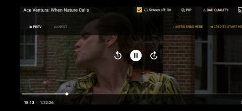
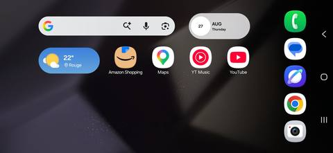

Turn the back seat into a movie theatre and a game room. BeeboTV brings your own library along for the ride — so a long road trip with the kids flies by, safely.
Built for road trips with kids. Everyone watches the same film in sync, the sound comes through the car, and when they get restless there are games to play. Pre-load your phone before you leave and it plays with no signal and no data used — no data-hungry streaming, and no “are we there yet?” meltdown.
Android Auto normally only lets apps play sound in the car. Beebo Mirror puts your phone’s whole screen up on the car display — so the kids can watch their movies and shows, not just listen to them.

A movie playing on the car screen — parked, with the app’s own controls.
🛡️ Safety first — how the screen is gated. Video appears on the car screen only at start-up, after a built-in 2-minute countdown, and only while the car has stayed in Park since you turned it on. If the car moves or leaves Park, mirroring stops for the rest of the trip — to use it again you turn the car off and back on and wait the two minutes again. That restart-and-wait is the whole point: it makes the screen something you set up before you pull away, never something you switch on at a stop light. There is no way to mirror video while moving.
Three simple states, so everyone in the car knows exactly what to expect.

Parked & set up. Your whole phone screen, mirrored on the car display — a browser, an app, a movie, anything.
The start-up countdown. Two minutes in Park, every time you start the car.
If the car leaves Park. Mirroring locks until a fresh restart.
Got more than one screen in the car? They all play the same movie at the same moment. Passengers can follow along on their own phones, tablets and laptops, while the car speakers carry the sound — nobody misses a thing.
In the Beebo app, each viewer gets a customizable audio-sync buffer to nudge their own picture into lip-sync with the car speakers — so nothing looks dubbed, even over Bluetooth or headphones.
A passenger with no app can join in seconds: scan the QR code and the watch party opens right in their phone’s browser. No install, no account — straight to the web, fast and simple.
When they get antsy, the kids can play games together — or, if a child is riding solo, against Cruisin’ Carl, a friendly built-in opponent, so there’s always someone to play with.
Your library’s audio plays right through the car’s speakers over Android Auto — the same simple, hands-free experience as any car media app.
Paste a web link to pull up your own online files, or stream a movie straight from your home PC over the internet. Their favourites, wherever you are.
The audio companion — plays your library through the car speakers, with passenger games and your own saved links.
Puts your phone’s whole screen on the car display, so films play as real video (with the safety gating above).
Your library and player, with Watch Together, Picture-in-Picture and Stream-from-PC built in.
A note for parents: the driver’s controls stay simple and hands-free — the movies, screens and games all live in the back seat where the kids are. See the driving-safety page for the full details.